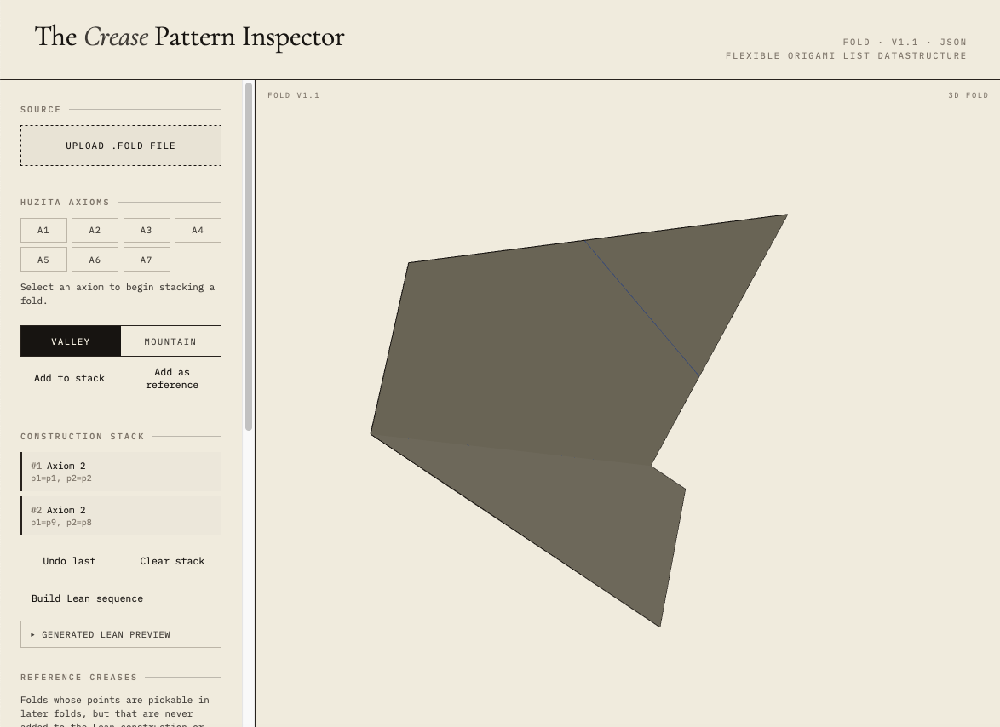
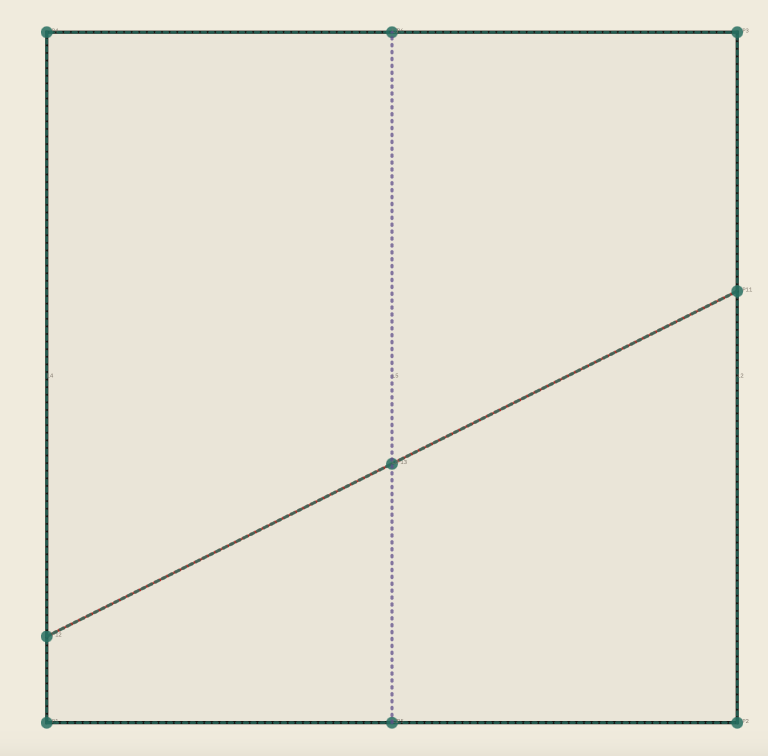
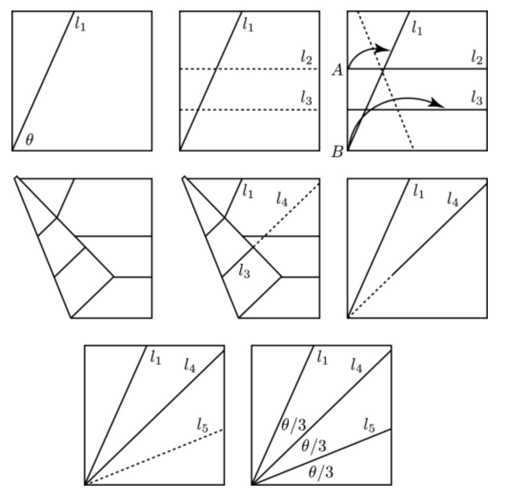

A Lean Paper About Paper: A Formal Framework for Origami
The mathematics of origami, including the Huzita operations and constructions beyond compass-and-straightedge, lack a formal machine-checked treatment. The Huzita operations are typically stated as axioms with imprecise degeneracy conditions.
The Huzita operations are redefined as theorems in Lean 4 rather than axioms, with existence and uniqueness proved under explicit non-degeneracy hypotheses. Lines are represented by normalized coefficient triples so that plain equality means geometric equality. Origami-constructible numbers, angle trisection, the Delian problem, and Haga's theorem are formalized, building on Mathlib. A web-based Crease Pattern Inspector procedurally converts models into Lean representations with viability proofs, constrained to Huzita-constructible points.

A Lean codebase with over 100 theorems and lemmas was produced, covering the seven Huzita folds, angle trisection, Cardano's formula, origami-constructible numbers, and Haga's theorem. The Crease Pattern Inspector provides a pipeline from visual crease patterns to Lean proofs.


| Fold | Hypothesis | Conclusion |
|---|---|---|
| H1 | p1 ≠ p2 | ∃! |
| H2 | p1 ≠ p2 | ∃! |
| H3 | None | ∃ |
| H4 | None | ∃! |
| H5 | d(p2,l1)² ≤ d(p1,p2)² | ∃ |
| H6 | l1 ∦ l2 | ∃ |
| H7 | l1 ∦ l2 | ∃! |